Snakes of Colombia
302 snake species are recorded in Colombia in SnakeList: 54 venomous and 248 non-venomous, from 9 families.
- 302species
- 54venomous
- 248non-venomous
- 9families
These totals count the snakes SnakeList records as living in Colombia. A species counts if it is recorded anywhere in the country, so not every snake lives in every region.
Species
Showing 302 species
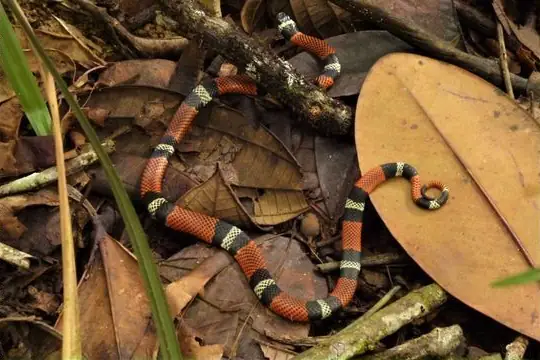
Aesculapian False Coral SnakeErythrolamprus aesculapii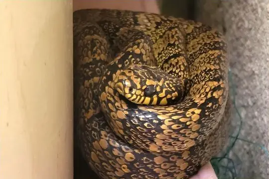
Aleman's Snail-eaterPlesiodipsas perijanensis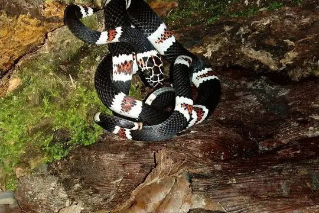
Amazon Banded SnakeRhinobothryum lentiginosum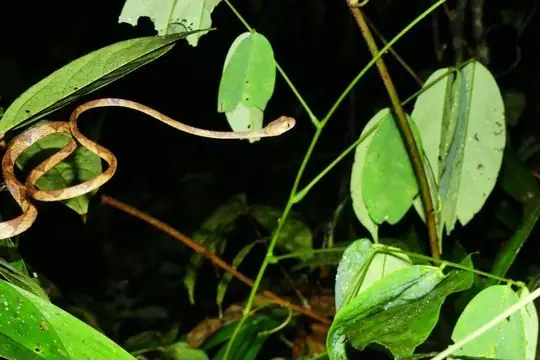
Amazon Basin Tree SnakeImantodes lentiferus- No photo yetAmazon Burrowing SnakeApostolepis niceforoi
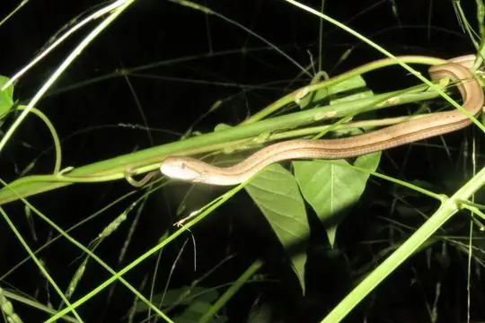
Amazon Coastal House SnakeThamnodynastes pallidus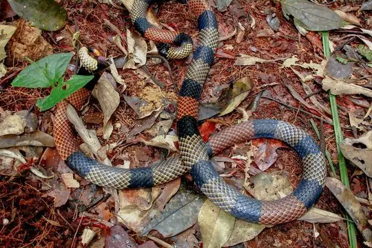
Amazon Coral SnakeMicrurus spixii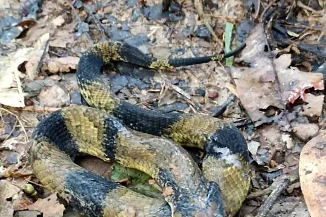
Amazon False Fer-de-lanceXenodon severus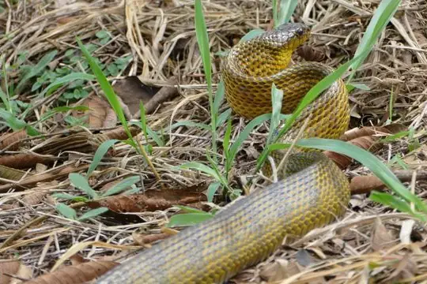
Amazon Puffing SnakeSpilotes sulphureus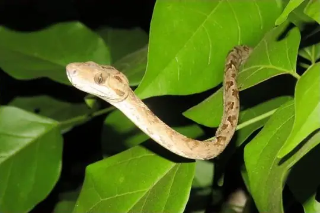
Amazon Tree BoaCorallus hortulana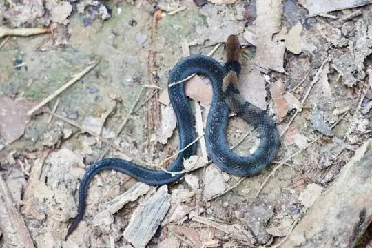
Amazon Tropical Forest SnakeErythrolamprus pygmaeus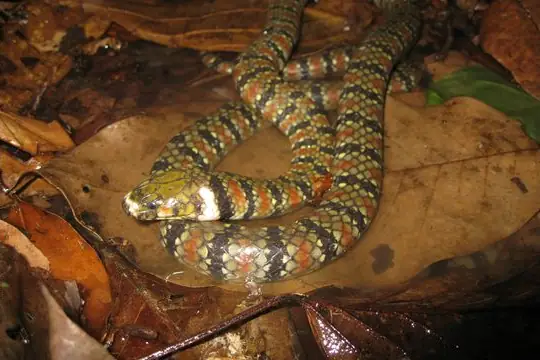
Amazon Water SnakeHydrops martii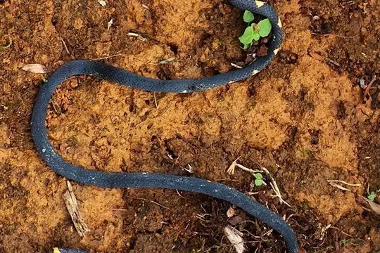
Andean Blackback Coral SnakeMicrurus narduccii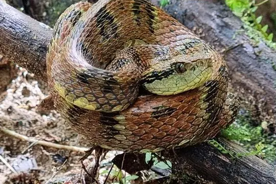
Andean Forest-pitviperBothrops pulcher- No photo yetAndean Ground SnakeAtractus andinus
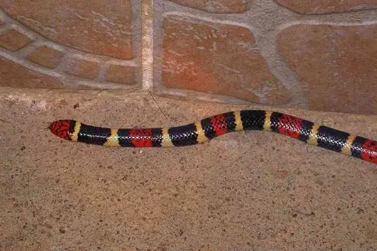
Aquatic Coral SnakeMicrurus surinamensis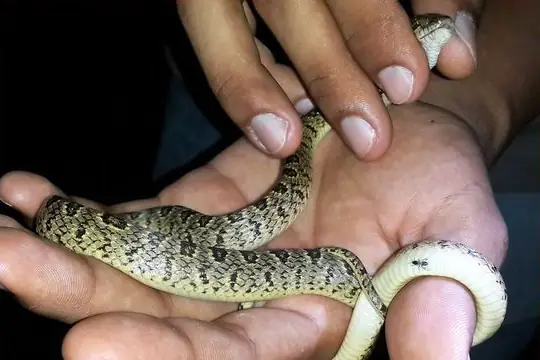
Ashmead's Banded Cat-eyed SnakeLeptodeira ashmeadii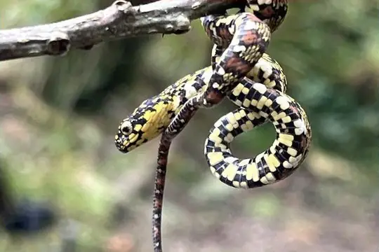
Ayerbes’ snail-eaterSibon ayerbeorum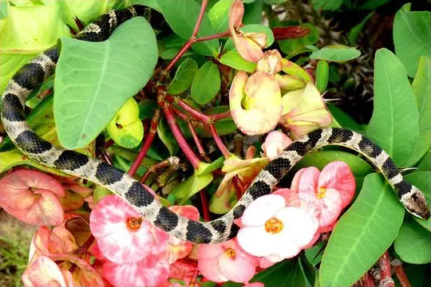
Baker's Cat-eyed SnakeLeptodeira bakeri Banded Cat-eyed Snake (annulata)Leptodeira annulata
Banded Cat-eyed Snake (annulata)Leptodeira annulata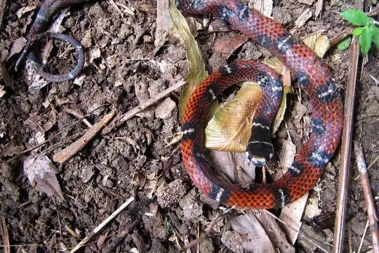
Banded Centipede SnakeTantilla supracincta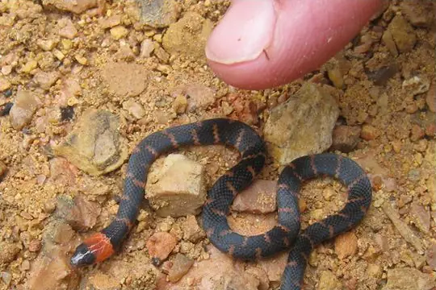
Banded Ground SnakeAtractus multicinctus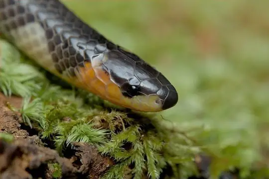
Basin Ground SnakeAtractus poeppigi- No photo yetBasin Worm SnakeAmerotyphlops minuisquamus
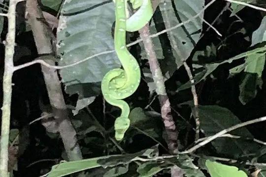
Bates' Tree BoaCorallus batesii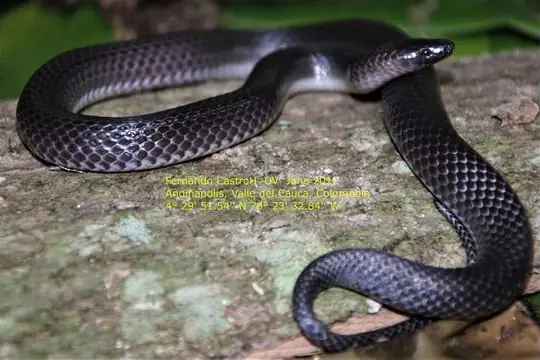
Betanien Earth SnakeGeophis betaniensis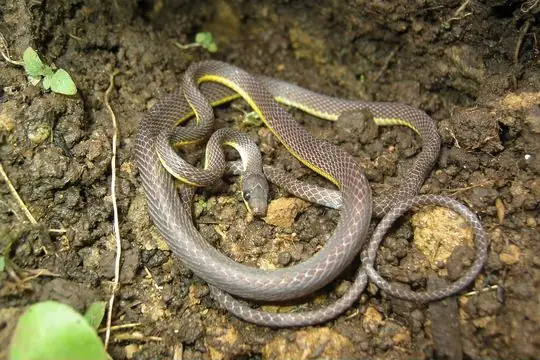
Bicolored Shadow SnakeSynophis bicolor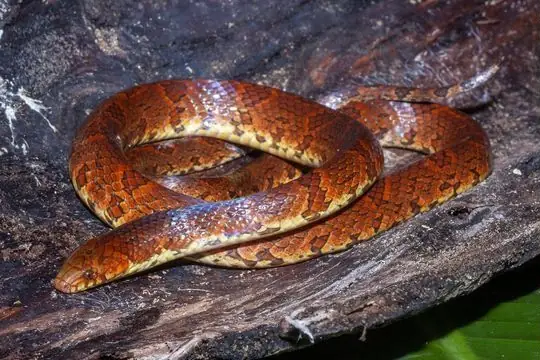
Big Ground SnakeAtractus major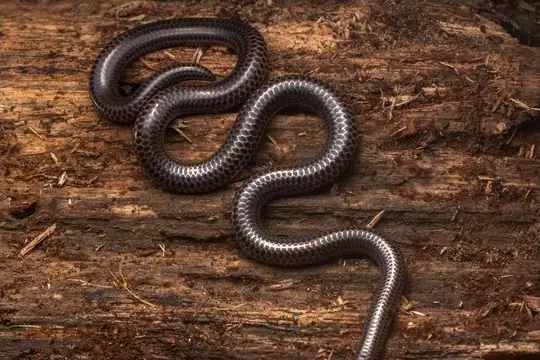
Big-scaled Blind SnakeTrilepida macrolepis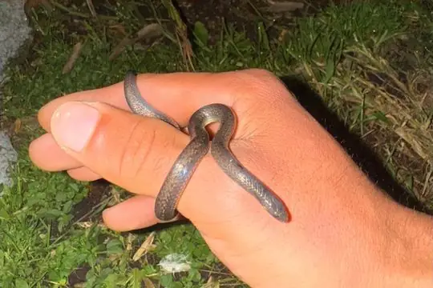
Bignose Ground SnakeAtractus obtusirostris- No photo yetBlack Centipede SnakeTantilla nigra
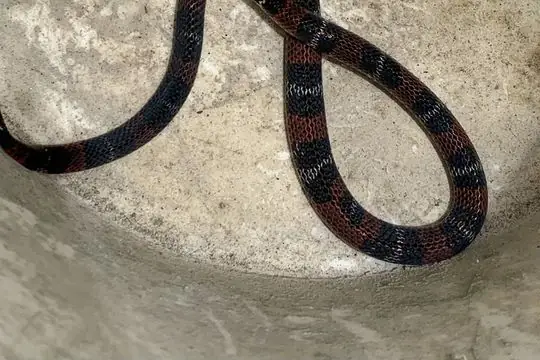
Black Ground SnakeAtractus elaps Black MilksnakeLampropeltis micropholis
Black MilksnakeLampropeltis micropholis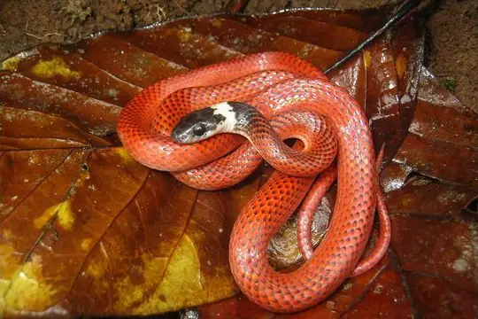
Black-collared SnakeDrepanoides anomalus- No photo yetBlack-ventered Ground SnakeAtractus nigriventris
- No photo yetBlackbelly Ground SnakeAtractus melanogaster
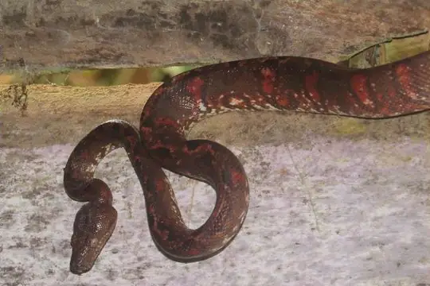
Blomber’s Tree BoaCorallus blombergi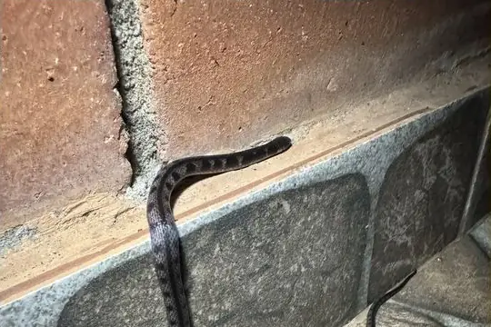
Bloody Ground SnakeAtractus sanguineus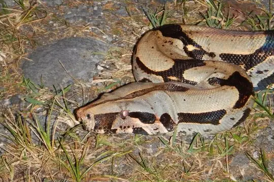
Boa ConstrictorBoa constrictor- No photo yetBocourt's Snail-eaterDipsas viguieri
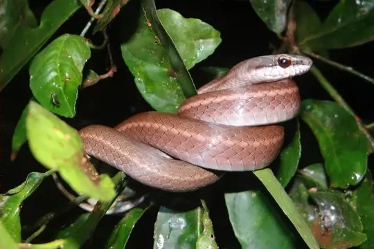
Boddaert's Tropical RacerMastigodryas boddaerti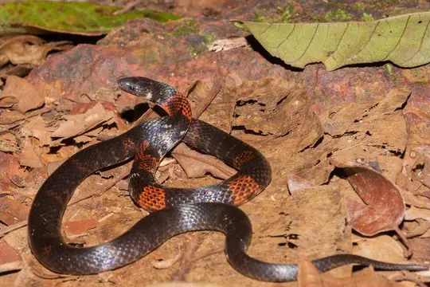
Boie's Ground SnakeAtractus badius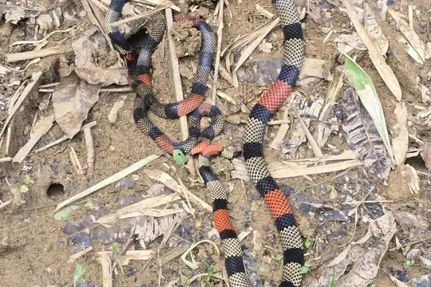
Bolivian Coral Snake (obscurus)Micrurus obscurus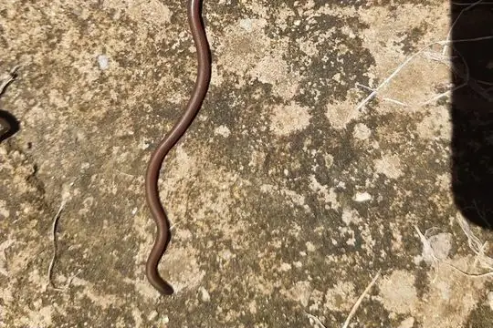
Bonda Blind SnakeLiotyphlops bondensis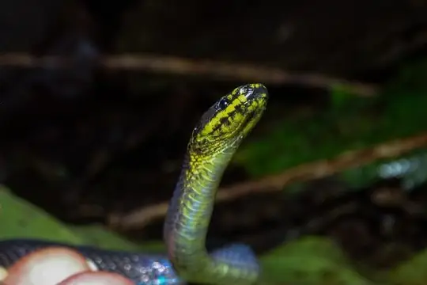
Braided Shadow SnakeSynophis plectovertebralis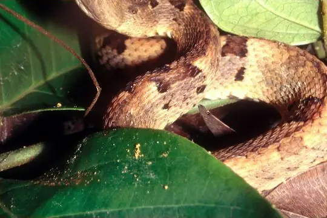
Brazil's Lancehead (oligobalius)Bothrops oligobalius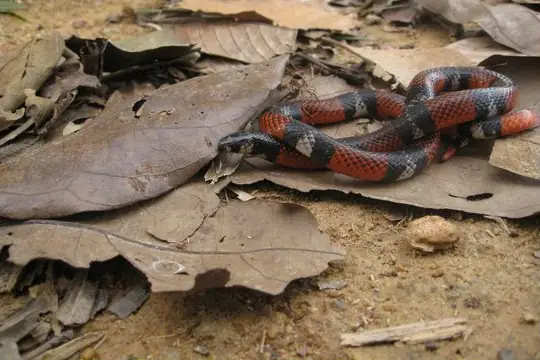
Broadhead Ground SnakeAtractus latifrons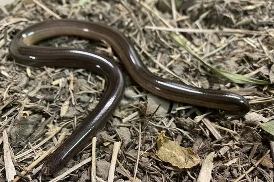
Brongersma's Worm SnakeAmerotyphlops brongersmianus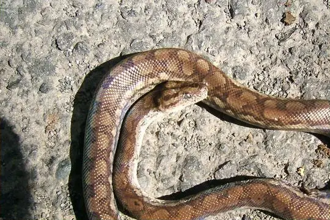
Brown Rainbow BoaEpicrates maurus Brown SipoChironius fuscus
Brown SipoChironius fuscus Brown VinesnakeOxybelis aeneus
Brown VinesnakeOxybelis aeneus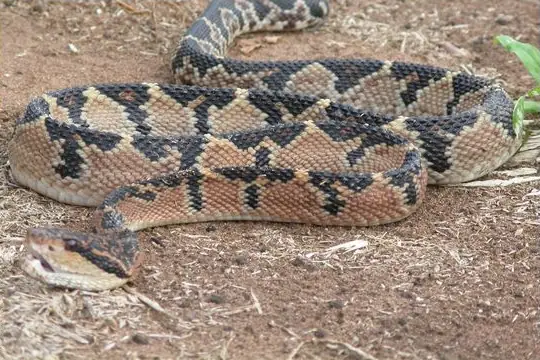
BushmasterLachesis muta- No photo yetCacicaBothrops ayerbei
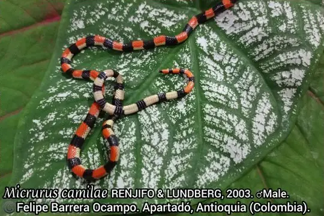
Camila's CoralsnakeMicrurus camilae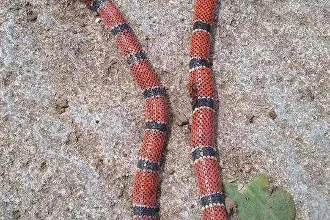
Capuchin coral snakeMicrurus dumerilii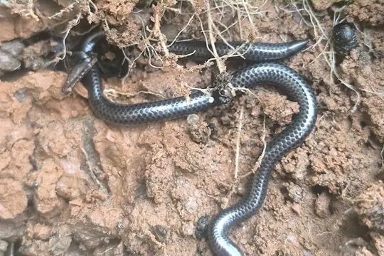
Caqueta Blind SnakeTrilepida brevissima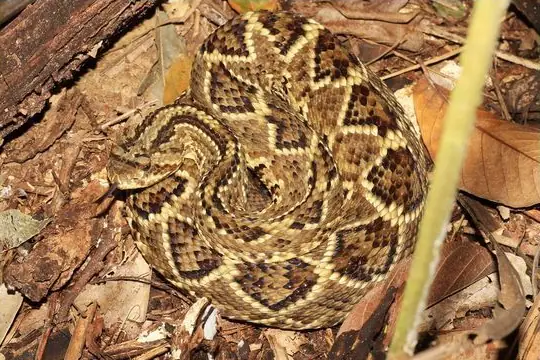
Cascabel RattlesnakeCrotalus durissus- No photo yetCat LanceheadBothrops rhombeatus
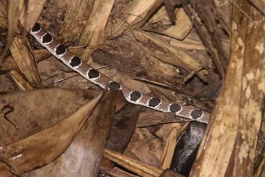
Catesby's Snail-eaterDipsas catesbyi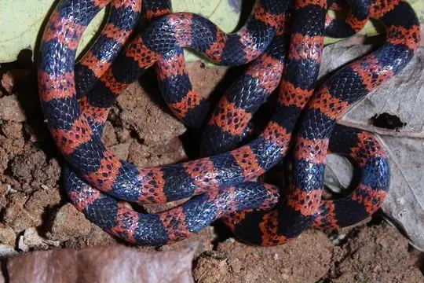
Cauca Coral SnakeMicrurus multiscutatus Central American Indigo SnakeDrymarchon melanurus
Central American Indigo SnakeDrymarchon melanurus Central Sipo (quadricarinatus)Chironius quadricarinatus
Central Sipo (quadricarinatus)Chironius quadricarinatus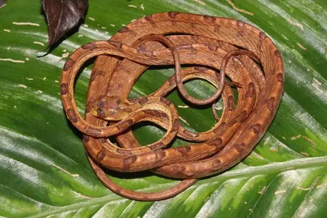
Chocoan Blunt-headed Vine SnakeImantodes chocoensis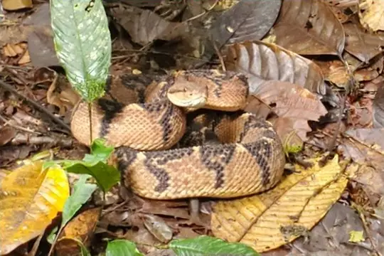
Chocoan BushmasterLachesis acrochorda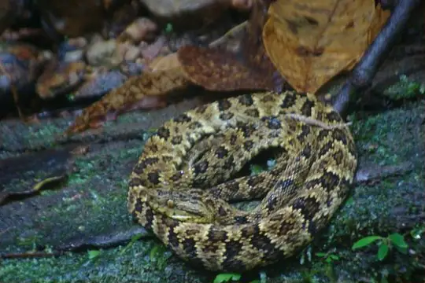
Chocoan Forest Pit ViperBothrops punctatus- Chocoan Toadheaded PitviperBothrocophias myersi
- No photo yetChocó Coral SnakeMicrurus spurrelli
- Clark's Coral SnakeMicrurus clarki
- Clark's Forest RacerDendrophidion clarkii
- Clark's Ground SnakeAtractus clarki
- Coal SnakePseudoboa neuwiedii
- Collared Ground SnakeAtractus collaris
- No photo yetColombian Blind SnakeAnomalepis colombia
 Colombian BoaBoa imperator
Colombian BoaBoa imperator- Colombian Earth Snake (nigroalbus)Geophis nigroalbus
- No photo yetColombian Frog-eating SnakeDiaphorolepis laevis
- Colombian LanceheadBothrocophias colombianus
- Common Green RacerChlorosoma viridissimum
 Common Neckband SnakeScaphiodontophis venustissimus
Common Neckband SnakeScaphiodontophis venustissimus- Cope's Blind SnakeLiotyphlops anops
- Cope's Tropical RacerMastigodryas pulchriceps
- Copper Parrot SnakeLeptophis cupreus
- Coral Cylinder SnakesAnilius scytale
- Crowned False BoaPseudoboa coronata
- No photo yetCundinamarca Blind SnakeLiotyphlops argaleus
- Daniel's KeelbackHelicops danieli
- Daniel's Tropical RacerMastigodryas danieli
- Dark Ground SnakeAtractus melas
 Degenhardt's Scorpion-eating SnakeStenorrhina degenhardtii
Degenhardt's Scorpion-eating SnakeStenorrhina degenhardtii- DiCaprio’s Snail-eating SnakeSibon irmelindicaprioae
- Diurnal Vine SnakeXenoxybelis argenteus
- DormilonaCorallus ruschenbergerii
- No photo yetDugand's Blind SnakeTrilepida dugandi
- No photo yetDunn's Saphenophis SnakeSaphenophis antioquiensis
 Ecuador SipoChironius grandisquamis
Ecuador SipoChironius grandisquamis- Ecuadorian ToadheadBothrocophias campbelli
- Elegant Snail-eaterDipsas elegans
- Emerald Tree BoaCorallus caninus
- Equatorial MussuranaClelia equatoriana
- Eyelash ViperBothriechis schlegelii
- Falcon indigo snakeDrymarchon caudomaculatus
- False Coral SnakeErythrolamprus pseudocorallus
- Fat Ground SnakeAtractus obesus
 Fer-de-lanceBothrops asper
Fer-de-lanceBothrops asper Fer-de-LanceBothrops atrox
Fer-de-LanceBothrops atrox Fiddle-string SnakeImantodes cenchoa
Fiddle-string SnakeImantodes cenchoa- Forest RacerDendrophidion bivittatus
- Goudot's Black Blind SnakeEpictia goudotii
- Graceful Snail-eaterDipsas gracilis
- Green AnacondaEunectes murinus
- Green JararacaBothrops bilineatus
- Grey Ground SnakeAtractus occipitoalbus
- No photo yetGuane Tree SnakeImantodes guane
 Guatemala Neckband SnakeScaphiodontophis annulatus
Guatemala Neckband SnakeScaphiodontophis annulatus- Hagmann's KeelbackHelicops hagmanni
- Hallowell's Coffee SnakeNinia atrata
- Hallowell's Ground SnakeAtractus fuliginosus
- Hemprich's Coral SnakeMicrurus hemprichii
- Herrmann's Water SnakeHydrodynastes bicinctus
- No photo yetHispanic Ground SnakeAtractus oculotemporalis
- Hognose LanceheadBothrocophias hyoprora
 Hognosed Pit ViperPorthidium nasutum
Hognosed Pit ViperPorthidium nasutum- Hoshell's Forest RacerDendrophidion boshelli
- Hudson's Coffee SnakeNinia hudsoni
- Impostor Flame-SnakeOxyrhopus vanidicus
- Indigo SnakeDrymarchon corais
- Indistinct Ground SnakeAtractus indistinctus
- Iridescent Ground SnakeAtractus iridescens
- Joshua's Blind SnakeTrilepida joshuai
- La Salle's Shadow SnakeSynophis lasallei
- Ladder KeelbackHelicops scalaris
- Langsdorff's Coral SnakeMicrurus langsdorffi
- Lansberg's Hognosed Pit ViperPorthidium lansbergii
- Lasalle's Ground SnakeAtractus lasallei
- Lehmann's Ground SnakeAtractus lehmanni
- Lichtenstein's Green RacerPhilodryas olfersii
- Lined Ground SnakeLygophis lineatus
 Linnaeus' SipoChironius exoletus
Linnaeus' SipoChironius exoletus- Litter SnakeTantilla reticulata
- No photo yetLoveridge's Ground SnakeAtractus loveridgei
- No photo yetMacarena Mountains Snail-eaterDipsas baliomelas
- Mangrove SnakErythrolamprus cobella
- Manizales Ground SnakeAtractus manizalesensis
- Marley’s Snail-eating SnakeSibon marleyae
- Martha’s GroundsnakeAtractus marthae
- Medem's CoralsnakeMicrurus medemi
 Mexican Blind SnakeAnomalepis mexicana
Mexican Blind SnakeAnomalepis mexicana- Military Ground SnakeErythrolamprus miliaris
- Mocquard's Swamp SnakeTretanorhinus mocquardi
- Mountain KeelbackHelicops angulatus
 Mountain SipoChironius monticola
Mountain SipoChironius monticola- No photo yetMyopic Shadow SnakeEmmochliophis miops
- Natterer's Coral SnakeMicrurus nattereri
- No photo yetNeblina coralsnakeMicrurus remotus
- Neckband Ground SnakeAtractus torquatus
- Neotropical Snail-eater (indica)Dipsas indica
 Neotropical Whip SnakeMasticophis mentovarius
Neotropical Whip SnakeMasticophis mentovarius- Nicéforo María's Shadow SnakeSynophis niceforomariae
- Norman's KeelbackHelicops polylepis
- No photo yetNortheastern Puffing SnakePhrynonax polylepis
- Northern Calico SnakeOxyrhopus occipitalis
- No photo yetNorthern Eyelash BoaTrachyboa boulengeri
- Northern Ground SnakeAtractus nicefori
- Northern Woodland RacerDrymoluber dichrous
- Olive Forest RacerDendrophidion dendrophis
 Oliver's Parrot Snake (coeruleodorsus)Leptophis coeruleodorsus
Oliver's Parrot Snake (coeruleodorsus)Leptophis coeruleodorsus Orangebelly Swamp SnakeTretanorhinus nigroluteus
Orangebelly Swamp SnakeTretanorhinus nigroluteus Ornate Cat-eyed SnakeLeptodeira ornata
Ornate Cat-eyed SnakeLeptodeira ornata- Ornate CoralsnakeMicrurus ornatissimus
- Pachacamac Ground SnakeAtractus snethlageae
 Pacific Longtail SnakeEnulius flavitorques
Pacific Longtail SnakeEnulius flavitorques- Painted Coral SnakeMicrurus corallinus
- No photo yetPalau's Blind SnakeLiotyphlops palauophis
- Pale Collared Scarlet SnakePseudoboa martinsi
 Pale Ground SnakeUrotheca decipiens
Pale Ground SnakeUrotheca decipiens- Pamplona Ground SnakeAtractus pamplonensis
- Panama Spotted Night SnakeSiphlophis cervinus
- Panamanian Dwarf BoaUngaliophis panamensis
- Parrot SnakeLeptophis ahaetulla
- Peru Snail-eaterDipsas peruana
- Peters' Forest RacerDendrophidion nuchale
- Phantasma Tree SnakeImantodes phantasma
- Pigmy Black-backed CoralsnakeMicrurus scutiventris
- Plee's Tropical RacerMastigodryas pleii
- Pointed Ground SnakeAtractus punctiventris
- Pratt's Snail-eaterDipsas pratti
- No photo yetPreocular Blind SnakeHelminthophis praeocularis
- Putumayo Coral SnakeMicrurus putumayensis
- Pyburn's Tropical Forest SnakeErythrolamprus pyburni
- Pygmy Coral SnakeMicrurus dissoleucus
- Rainbow BoaEpicrates cenchria
- Red-black Ground SnakeAtractus erythromelas
- Red-headed GlasstailUrotheca fulviceps
 Redtail Coral SnakeMicrurus mipartitus
Redtail Coral SnakeMicrurus mipartitus- Regal Coral SnakeMicrurus ancoralis
- Reticulate Worm SnakeAmerotyphlops reticulatus
- Ribboned Brittle-SnakeUrotheca lateristriga
- Ringed Centipede SnakeTantilla semicincta
- No photo yetRinged Slender CoralsnakeMicrurus renjifoi
 Ringed Snail SuckerSibon annulatus
Ringed Snail SuckerSibon annulatus Ringed Tree BoaCorallus annulatus
Ringed Tree BoaCorallus annulatus- Rio Tropical RacerPalusophis bifossatus
- Royal Ground SnakeErythrolamprus reginae
- Rustyhead SnakeAmastridium veliferum
- San Andres SnakeConiophanes andresensis
- No photo yetSantander Blind SnakeTrilepida nicefori
- Santander Coral SnakeMicrurus sangilensis
- Saphenophis SnakeSaphenophis sneiderni
- Savannah RacerErythrolamprus aenigma
- Shaw's Dark Ground SnakeErythrolamprus melanotus
- Short Ground SnakeErythrolamprus breviceps
- Short-nosed GroundsnakeTaeniophallus brevirostris
- Shreve's KeelbackHelicops pastazae
- Shropshire's Puffing SnakePhrynonax shropshirei
 Sipo (carinatus)Chironius carinatus
Sipo (carinatus)Chironius carinatus Sipo (flavopictus)Chironius flavopictus
Sipo (flavopictus)Chironius flavopictus- Slender Coral SnakeMicrurus filiformis
- Small-eyed ToadheadBothrocophias microphthalmus
- No photo yetSouth American Blind Snake (signata)Epictia signata
- South American Coral SnakeMicrurus lemniscatus
 South American Forest RacerDendrophidion percarinatum
South American Forest RacerDendrophidion percarinatum- South American Pond Snake (plicatilis)Pseudoeryx plicatilis
 South American Sipo (multiventris)Chironius multiventris
South American Sipo (multiventris)Chironius multiventris- No photo yetSouthern Colombian Blind SnakeLiotyphlops haadi
- Speckled Forest Pit ViperBothrops taeniatus
- No photo yetSpeckled Ground SnakeAtractus ventrimaculatus
- Spiral KeelbackHelicops petersi
 Spix's SipoChironius spixii
Spix's SipoChironius spixii- Spotted Genuine-SnakeSaphenophis boursieri
- St. Marta's Ground SnakeAtractus sanctaemartae
- No photo yetStriped Ground SnakeAtractus vertebrolineatus
- No photo yetStriped Swamp SnakeTretanorhinus taeniatus
- No photo yetTambito's Coral SnakeMicrurus oligoanellatus
- Temporal Snail-eaterDipsas temporalis
- Thickhead Ground SnakeAtractus crassicaudatus
- No photo yetThree-banded Ground SnakeAtractus trivittatus
- Three-striped Smooth Ground SnakeSaphenophis tristriatus
- Tikuna coralsnakeMicrurus tikuna
- Triangle Water SnakeHydrops triangularis
 Tropical Flat SnakeSiphlophis compressus
Tropical Flat SnakeSiphlophis compressus- Tropical Snail-eaterDipsas sanctijoannis
- Troschel's Pampas SnakePhimophis guianensis
- Tschudi's False Coral SnakeOxyrhopus melanogenys
- Tucuman ThreadsnakeEpictia albipuncta
- Two-lined Ground SnakeAtractus biseriatus
- Typhon Ground SnakeAtractus typhon
- No photo yetVariegated Ground SnakeAtractus variegatus
- Velvet SwampsnakeErythrolamprus typhlus
- Venezuela Coral SnakeMicrurus isozonus
- Venezuela LanceheadBothrops venezuelensis
- Venezuela Snail-eaterDipsas latifrontalis
- Vermiculate Snail-eaterDipsas vermiculata
- Vieira's Snail-eating SnakeSibon vieirai
- Wagler's Blind SnakeEpictia albifrons
- Wagler's Ground SnakeAtractus wagleri
 Wagler's SipoChironius scurrulus
Wagler's SipoChironius scurrulus- Werner's False Coral SnakeOxyrhopus leucomelas
- Werner's Ground SnakeAtractus werneri
- White-banded Coral SnakeMicrurus albicinctus
- Wucherer's Ground SnakeXenopholis scalaris
 Yellowbelly SnakeConiophanes fissidens
Yellowbelly SnakeConiophanes fissidens- No photo yetYellowtail Blind SnakeHelminthophis flavoterminatus
- No photo yetApostolepis collaris
- No photo yetAtractus alytogrammus
- No photo yetAtractus apophis
- Atractus atratus
- No photo yetAtractus attenuatus
- No photo yetAtractus avernus
- No photo yetAtractus boulengerii
- No photo yetAtractus careolepis
- No photo yetAtractus caxiuana
- No photo yetAtractus charitoae
- Atractus chthonius
- No photo yetAtractus depressiocellus
- No photo yetAtractus echidna
- No photo yetAtractus eriki
- No photo yetAtractus franciscopaivai
- No photo yetAtractus heliobelluomini
- No photo yetAtractus macondo
- Atractus medusa
- No photo yetAtractus nasutus
- No photo yetAtractus ochrosetrus
- Atractus orcesi
- Atractus pachacamac
- Atractus paisa
- No photo yetAtractus tamaensis
- Atractus titanicus
- No photo yetAtractus turikensis
- Bothrocophias myrringae
- Bothrocophias tulitoi
- Dendrophidion prolixum
- Erythrolamprus dorsocorallinus
- No photo yetErythrolamprus epinephelus
- No photo yetErythrolamprus lamonae
- Erythrolamprus taeniogaster
- Erythrolamprus vitti
- Ninia teresitae
- No photo yetThamnodynastes dixoni
- No photo yetThamnodynastes gambotensis
- Thamnodynastes silvai
- No photo yetUrotheca dumerilli
- Urotheca multilineata
No snakes in Colombia match.
Colombia’s snakes in numbers
- Families: Colubridae 215, Elapidae 29, Viperidae 23, Boidae 12, Anomalepididae 9, Leptotyphlopidae 9, Typhlopidae 3, Aniliidae 1, Tropidophiidae 1.
- 85 are recorded in no other country in SnakeList: Amazon Burrowing Snake, Andean Ground Snake, Ayerbes’ snail-eater, Betanien Earth Snake, Bignose Ground Snake, Black Centipede Snake, Black-ventered Ground Snake, Blackbelly Ground Snake, Bloody Ground Snake, Bonda Blind Snake, Braided Shadow Snake, Cacica and 73 more.
States and provinces
The states and provinces where SnakeList records snakes, with how many species each has. Each page has its families, venomous snakes, the species found only there, its cities and neighbours.
- Amazonas 51 species
- Antioquia 72 species
- Arauca 14 species
- Atlántico 15 species
- Bolívar 22 species
- Boyacá 36 species
- Caldas 40 species
- Caquetá 35 species
- Casanare 28 species
- Cauca 47 species
- Cesar 23 species
- Chocó 56 species
- Córdoba 17 species
- Cundinamarca 36 species
- Guainía 9 species
- Guaviare 17 species
- Huila 22 species
- La Guajira 20 species
- Magdalena 24 species
- Meta 44 species
- Nariño 37 species
- Norte de Santander 17 species
- Putumayo 30 species
- Quindío 13 species
- Risaralda 28 species
- San Andrés, Providencia y Santa Catalina 2 species
- Santander 46 species
- Sucre 13 species
- Tolima 28 species
- Valle del Cauca 57 species
- Vaupés 21 species
- Vichada 17 species
No place matches that.
Cities
Its biggest cities, biggest first. Snakes are recorded by state or province, not by city, so each city page shows the snakes of the state or province it is in.
- Bogotá Cundinamarca
- Cali Valle del Cauca
- Medellín Antioquia
- Barranquilla Atlántico
- Cartagena Bolívar
- Cúcuta Norte de Santander
- Bucaramanga Santander
- Pereira Risaralda
- Santa Marta Magdalena
- Ibagué Tolima
- Bello Antioquia
- Pasto Nariño
- Manizales Caldas
- Neiva Huila
- Soledad Atlántico
- Villavicencio Meta
- Armenia Quindío
- Soacha Cundinamarca
- Valledupar Cesar
- Itagüí Antioquia
- Montería Córdoba
- Sincelejo Sucre
- Popayán Cauca
- Floridablanca Santander
- Palmira Valle del Cauca
No place matches that.